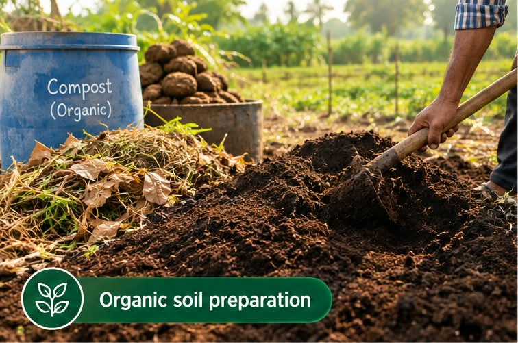
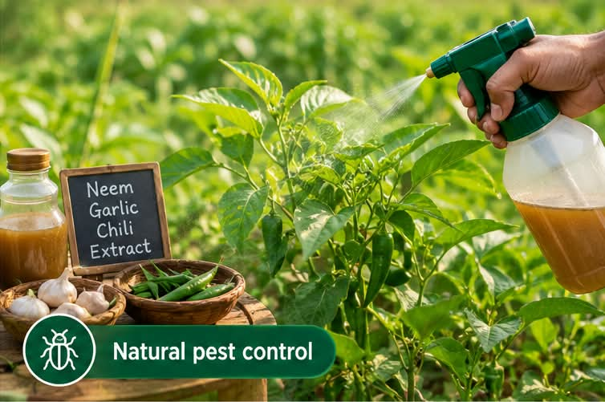
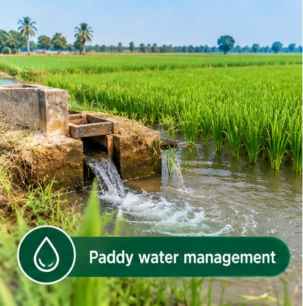
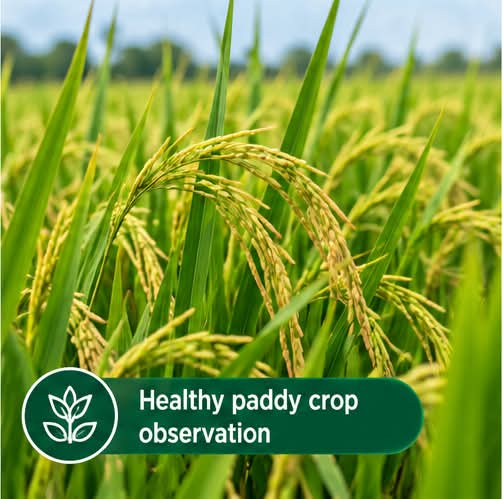
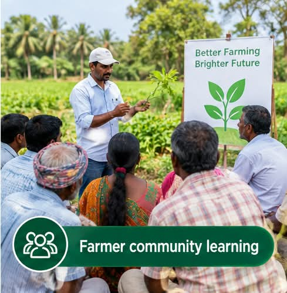

01Soil management
Use compost, green manure, crop rotation, and properly prepared buffalo dung to improve fertility, structure, and nutrient cycling. Healthy soil gives paddy a stronger foundation.
Organic paddy cultivation
Organic farming works with nature. These practices protect soil, water, crops, farmers, and the wider community.

01Use compost, green manure, crop rotation, and properly prepared buffalo dung to improve fertility, structure, and nutrient cycling. Healthy soil gives paddy a stronger foundation.

02Observe the crop regularly, encourage helpful organisms, remove weeds mechanically, and choose botanical or biological protection before harmful chemicals. Early observation helps farmers respond carefully.

03Use field channels carefully, maintain suitable water levels, prevent unnecessary wastage, and adjust irrigation to soil condition and crop growth. Good drainage is as important as good supply.

04Check plant height, leaf colour, soil moisture, visible pest damage, and differences between natural and chemical-based fields. Written observations make farming decisions clearer.

05Record farmer knowledge, compare practices respectfully, keep clear field notes, and share practical learning through simple visual explanations, workshops, and farmer presentations.